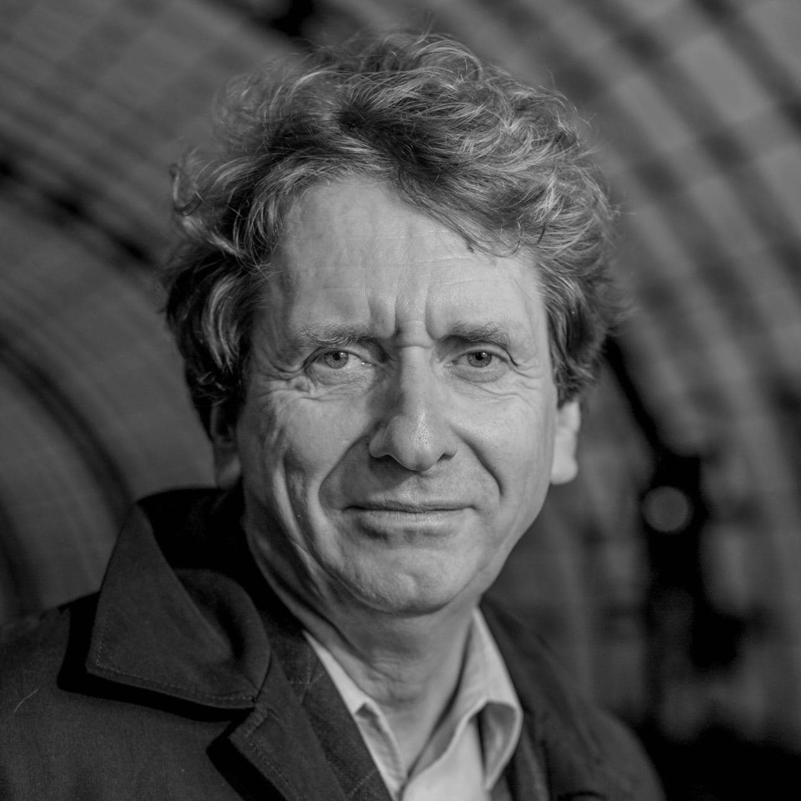
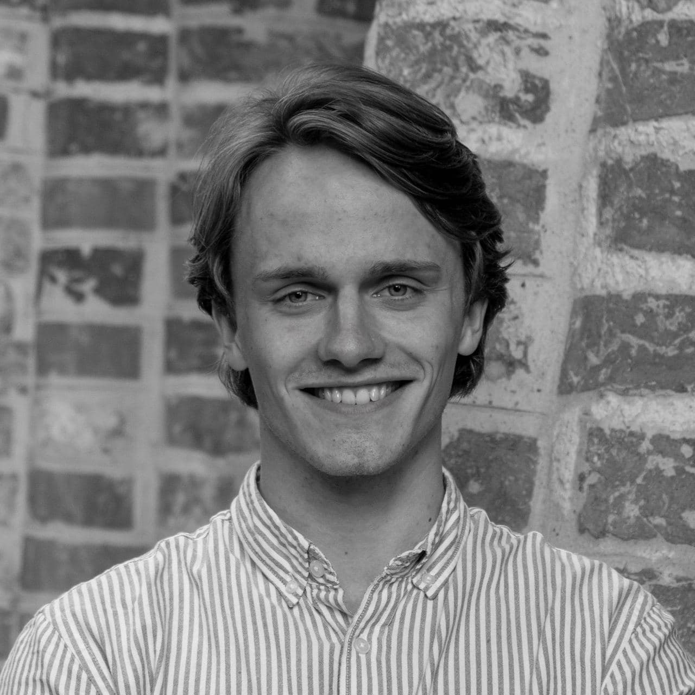

Warum
Wir wollen Mehr.
Wir wollen klimapositiv sein und einen Fußabdruck hinterlassen, der Nährstoff bedeutet.
Nährstoff für die Kinder aller Lebewesen und für alle Zeit.
Wir möchten Produkte fördern, die mit Qualität, Schönheit und Innovation begeistern - Ideen verwirklichen,
die für die Bio- und die Technosphäre nützlich und wertvoll sind.
Wir streben nach qualitativem Wachstum. Zusammen mit Euch für eine Welt, in der wir Morgen kaum erwarten können.
Holy Shit. - das bedeutet, den Wert der Materialien anzuerkennen und somit Konsum,
Biodiversität und das Leben aller Arten zu feiern.
Wer


Gegründet wurde Holy Shit. von Prof. Dr. Michael Braungart, Chemiker und Verfahrenstechniker,
sowie Entwickler des Cradle to Cradle Prinzips.
Die Geschäftsführung und Ihr Vertrauen liegt dabei bei uns, Lea Lensky & Victor Büchner.
Darüber hinaus trägt unser wissenschaftlicher Beirat mit Vertreter*innen der Leuphana Universität Lüneburg,
Braungart EPEA internationale Umweltforschung GmbH und dem Hamburger Umweltinstitut e.V.,
sowie ein großes Netzwerk von Studierenden aus einer Vielzahl von Disziplinen,
Wissensgebieten und kulturellen Hintergründen dazu bei, unsere positive Vision zu verfolgen.
Umgesetzt werden unsere Projekte durch die partnerschaftliche Zusammenarbeit mit unseren weitreichenden Kontakten
aus Politik, Wissenschaft und Wirtschaft. Gemeinsam für eine Zukunft voll Effektivität und Intelligenz!
Wie
Jedes Semester entsteht eine Vielzahl an qualitativ hochwertigen, innovativen und
mit Leidenschaft erarbeiteten universitären Forschungsarbeiten, deren Ergebnisse und
dahinterstehende Studierende es verdient haben, ihren Weg in die Praxis zu finden.
Wir ermöglichen diesen Transfer - Holy Shit. als die wertschaffende Schnittstelle zwischen Wissenschaft und Wirtschaft.
Durch wissenschaftliche Ausarbeitungen, Machbarkeitsstudien, Innovationspartnerschaften, Workshops und
Vorträge tragen wir die wertvollen Forschungsergebnisse in die Praxis und vermitteln und
verbreiten das Cradle to Cradle Prinzip in der Gesellschaft.
Gemeinsam mit transdisziplinären Studierendengruppen und in ständiger Absprache und
somit mit dem wissenschaftlichen Backup von Prof. Dr. Michael Braungart setzen wir
individuelle Cradle to Cradle Lösungen & Konzepte um und geben Unternehmen die Chance,
ihren Fußabdruck zu einem Feuchtgebiet, auf das sie mit Recht stolz sein können, werden zu lassen.